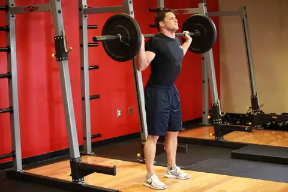
Присед со штангой
Спина прямая, колени по носкам, глубина до параллели бёдер с полом.
штангаоснова

Спина прямая, колени по носкам, глубина до параллели бёдер с полом.
штангаоснова
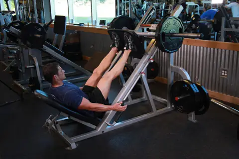
Поясница прижата к спинке, колени не сводить, не выпрямлять до щелчка.
тренажёроснова
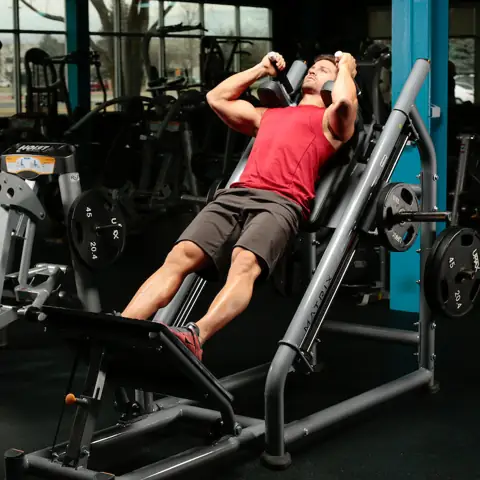
Ноги на платформе чуть ниже середины, опускайтесь глубоко и подконтрольно.
тренажёр
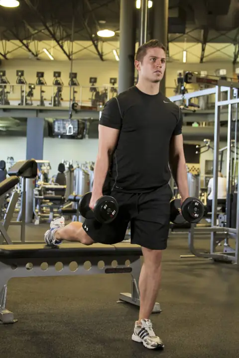
Корпус слегка вперёд, заднюю ногу на скамью, вес на переднюю пятку.
гантели
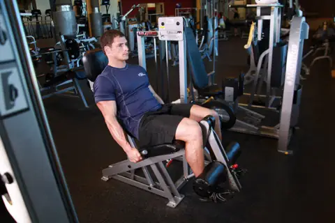
В верхней точке секунда паузы, вниз медленно.
тренажёр
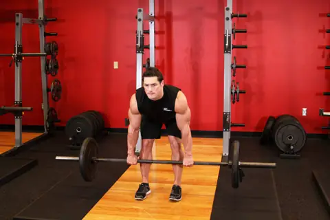
Таз назад, колени слегка согнуты, штанга скользит по бёдрам, спина ровная.
штангаоснова
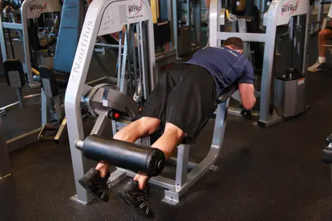
Таз не отрывать от скамьи, вниз за 2-3 секунды.
тренажёроснова
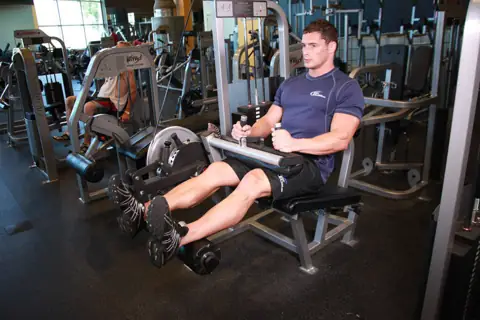
Хорошо растягивает заднюю поверхность, амплитуда полная.
тренажёр
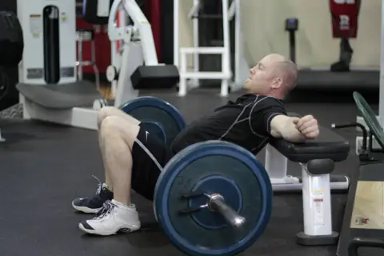
Подбородок к груди, наверху сожмите ягодицы, не прогибайте поясницу.
штанга
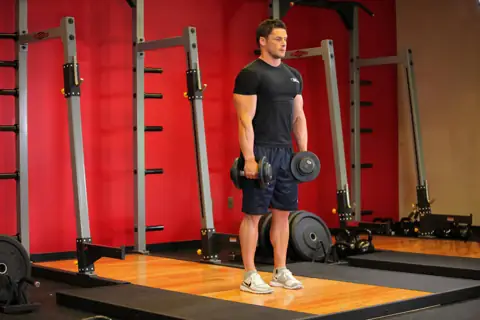
То же, что со штангой: таз назад, гантели близко к ногам.
гантели
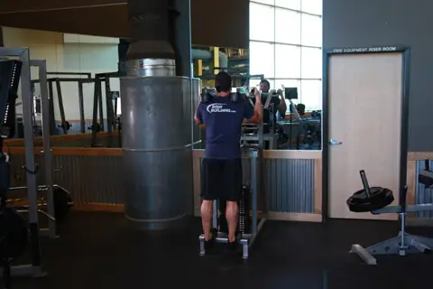
Полная амплитуда: внизу растяжка, наверху пауза.
тренажёроснова
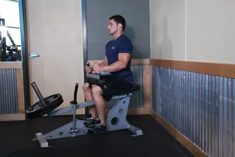
Нагружает камбаловидную мышцу, делайте на 10-15 повторений.
тренажёр
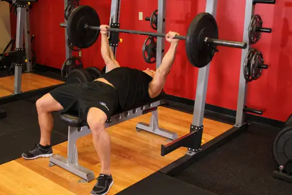
Лопатки сведены, штанга к низу груди, ноги упираются в пол. Ставьте упоры.
штангаоснова
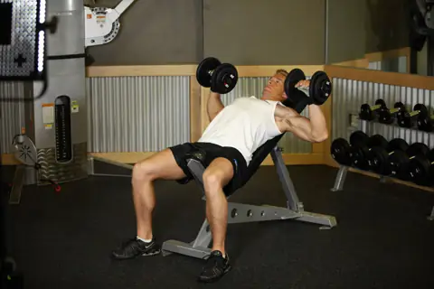
Скамья 30°, нагружает верх груди, локти не разводить в стороны.
гантелиоснова
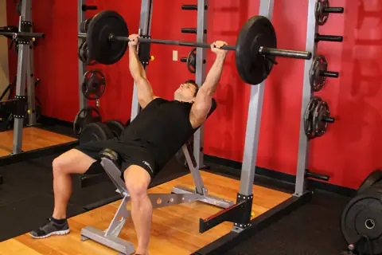
Скамья 30°, штанга к верху груди. Нужны упоры.
штанга
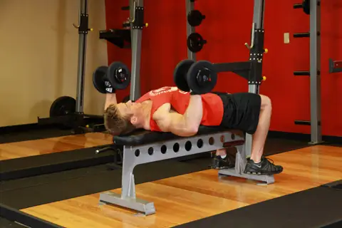
Безопасная замена штанге, амплитуда больше.
гантели
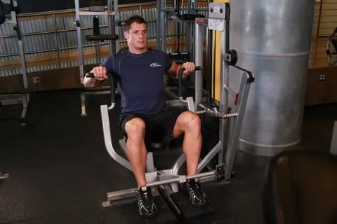
Можно работать до отказа без страховки.
тренажёр
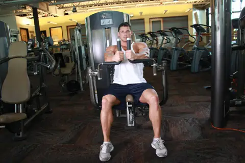
Локти чуть согнуты, сводите грудью, а не руками.
тренажёр
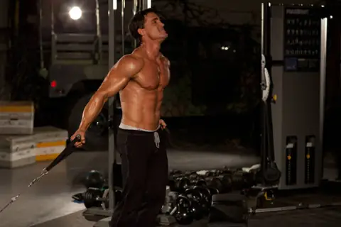
Руки идут снизу вверх к лицу, акцент на верх груди.
блок
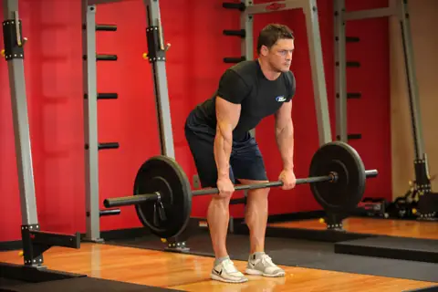
Корпус около 45°, тяните к низу живота, без рывков.
штангаоснова
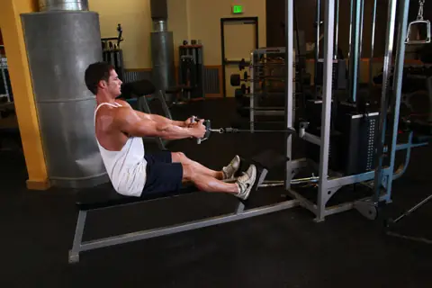
Грудь вперёд, сводите лопатки, не раскачивайтесь.
блокоснова
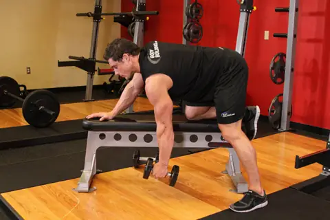
Рука на скамье, тяните локтем к бедру.
гантели
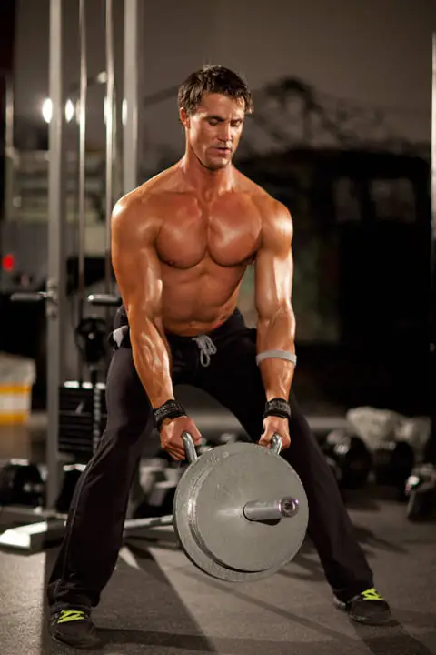
Спина ровная, тянете к груди, тяжёлое упражнение.
штанга
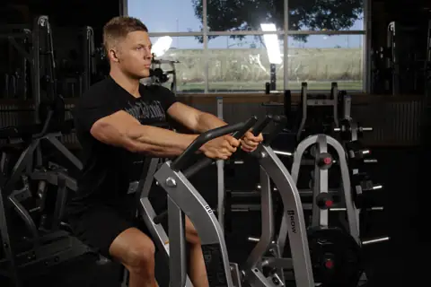
Грудь на упоре, можно качать до отказа безопасно.
тренажёр
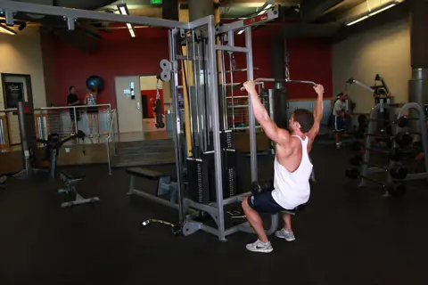
Тяните рукоять к верху груди, локти вниз, корпус чуть назад.
блокоснова
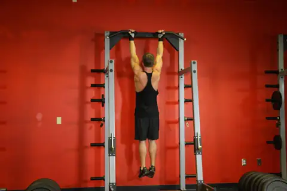
Полный вис внизу, подбородок выше перекладины. Включает и бицепс.
своё телооснова
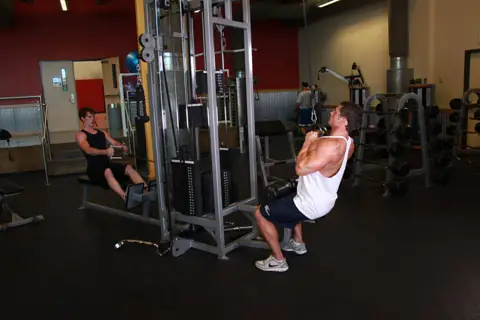
Узкий хват, акцент на низ широчайших.
блок
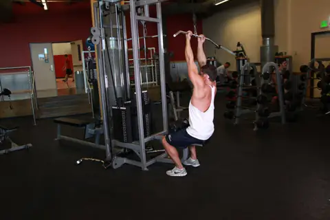
Подходит тем, кому не даются подтягивания.
блок
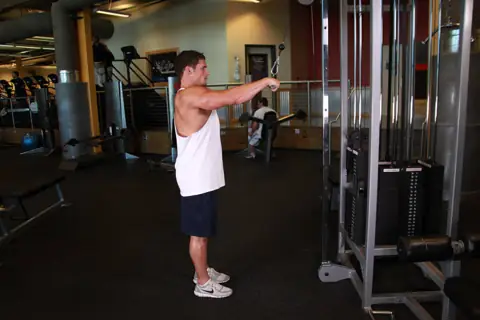
Руки почти прямые, тяните к бёдрам, чувствуйте широчайшие.
блок
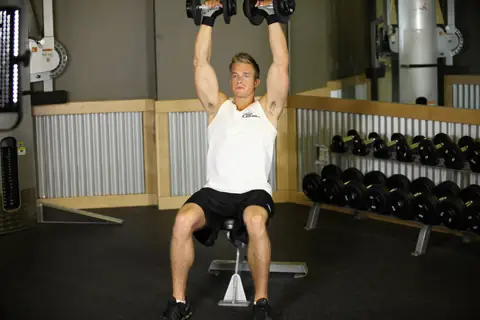
Спина прижата к спинке, гантели над головой, локти чуть вперёд.
гантелиоснова
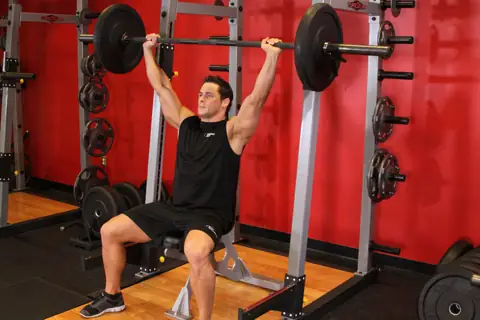
Корпус ровный, ягодицы напряжены, не прогибайтесь.
штанга
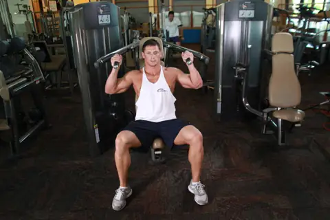
Безопасно, хорош для работы до отказа.
тренажёр
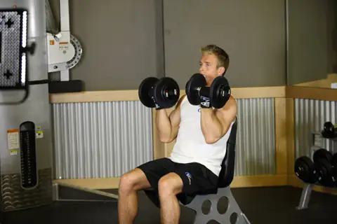
С поворотом ладоней, берите вес полегче.
гантели
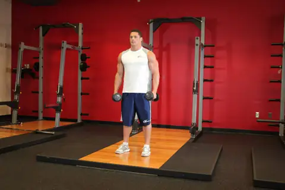
Локти чуть согнуты, поднимайте до уровня плеч, без раскачки.
гантелиоснова
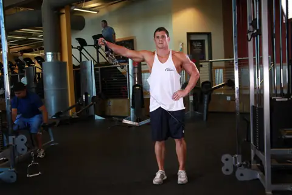
Постоянное натяжение, средняя дельта работает лучше.
блок
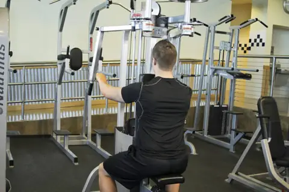
Задняя дельта, ведите локтями, а не кистями.
тренажёроснова
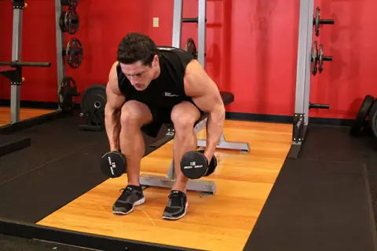
Лёгкие гантели, грудь к коленям, разводите в стороны.
гантели
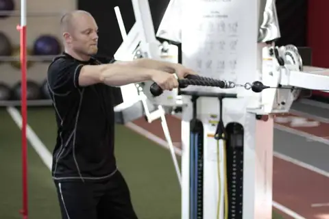
Тяните к лбу, локти высоко, хорошо для плеч и осанки.
блок
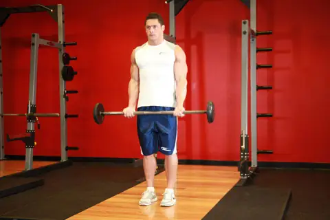
Локти у корпуса, без раскачки.
штанга
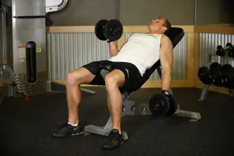
Бицепс растянут сильнее, берите меньше веса.
гантели
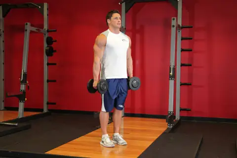
Нейтральный хват, нагружает брахиалис и предплечья.
гантели
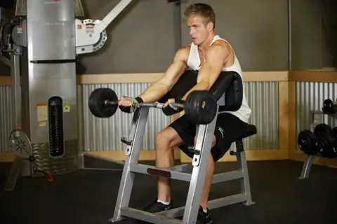
Нет читинга, вниз медленно.
штанга
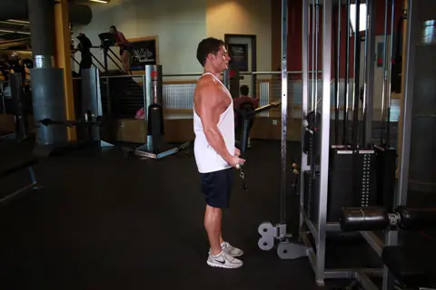
Постоянное натяжение, удобно делать дроп-сеты.
блок
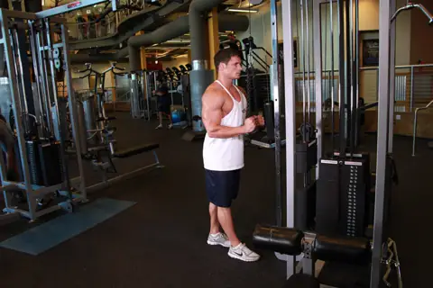
Локти прижаты, внизу разводите канат в стороны.
блок
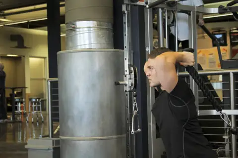
Руки над головой, хорошо растягивает длинную головку.
блок
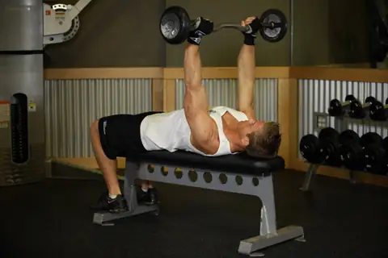
Локти смотрят вверх, опускайте ко лбу.
штанга
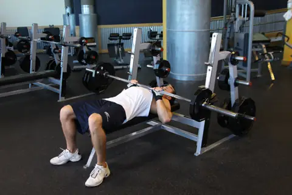
Хват чуть уже плеч, нужны упоры.
штанга
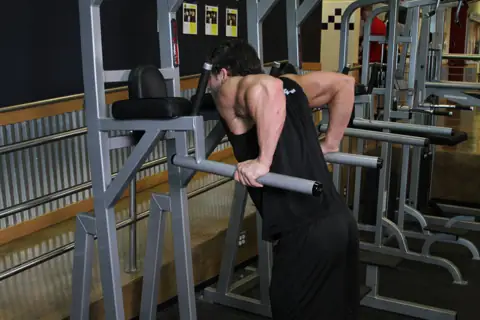
Корпус вертикально, локти назад.
своё тело
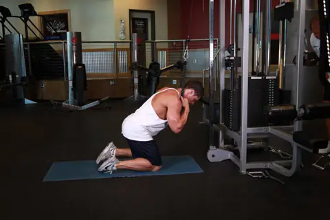
Округляйте корпус, а не сгибайтесь в бёдрах, можно утяжелять.
блокоснова
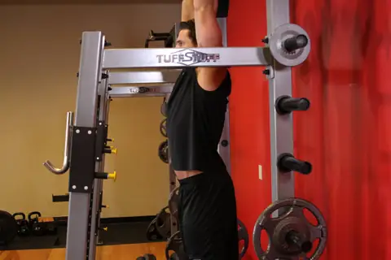
Без раскачки, таз подкручивайте вверх.
своё тело
Удобно наращивать вес.
тренажёр
Поясница прижата, поднимайте лопатки.
своё тело
Тело в линию, ягодицы и пресс напряжены, 30-60 секунд.
своё тело